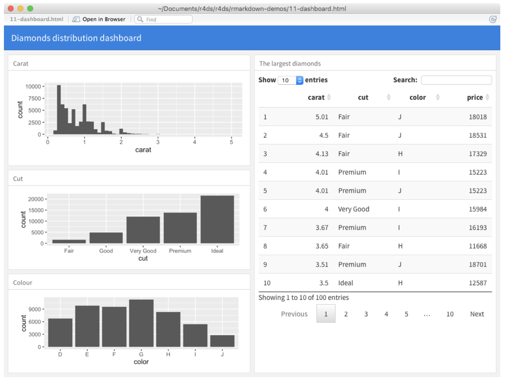
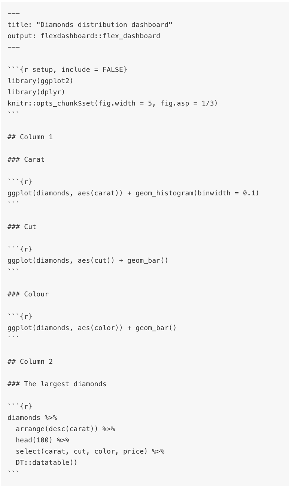

install.packages(c("flexdashboard", "DT", "shiny"))Pre-lecture materials
Read ahead
Read ahead
Before class, you can prepare by reading the following materials:
- Information about creating dashboards: https://rmarkdown.rstudio.com/flexdashboard/
- Example case study with associated dashboard from the Open Case Studies project: https://www.opencasestudies.org/ocs-bp-school-shootings-dashboard/
Prerequisites
Before starting you must install three additional packages:
flexdashboard- this provides tools for easily building dashboardsDT- this provides built-in data display functionalityshiny- this provides functionality to create interactive dashboard elements
You can do this by calling
or use the “Install Packages…” option from the “Tools” menu in RStudio.
Acknowledgements
Some of the material from today’s class is adapted from “R for Data Science” by Grolemund and Wickham, sections 29.6 and 29.7.2. It is based on lecture notes initially developed by Leah Jager.
The detailed example covered in the second part of class was developed as part of the Open Case Studies project which you can learn more about here.
Learning objectives
Learning objectives
At the end of this lesson you will:
- Know how to create a basic dashboard to display data analysis elements using
flexdashboard - Add interactive elements to your dashboard using tools from the
shinypackage - Have resources to assist you in developing your own more complex dashboard to clearly present data and interactive elements
Introduction
Data dashboards allow you to communicate large amounts of information visually and quickly with the added benefit of allowing the user to interact with the data directly in the dashboard. Flex dashboard is a method of creating dashboards using R Markdown.
Here’s an example of what a dashboard might look like:

Getting started
To create a new dashboard, use the menus at the top of RStudio cloud to select File –> New File –> R Markdown… Choose From Template in the box on the left and then select Flex Dashboard from the box on the right. NOTE: This option will only appear once you have installed the flexdashboard package. Then click OK. This will open up a dashboard template.
You can knit this file just as you would a regular R Markdown document. Let’s do that and take a look at what you get! Note you will have to save this file first before knitting. Save it in your project directory as trial_dashboard.Rmd when prompted.
Layouts
Notice the layout of the blank document is given by the hash (#) signs. In general:
- Each level 1 header (#) begins a new page in the dashboard.
- Each level 2 header (##) begins a new column.
- Each level 3 header (###) begins a new row.
When you knit the blank document, you’ll see blank output with a title (Untitled) and then three rows of charts (Chart A, Chart B, and Chart C. Notice that in the code there are three sections with these titles, each designated with three hashes (###)). Right now these charts are all blank, since these sections just have empty code chunks!

Here you can see there are two columns (designated by ##) and various rows within each column (designated with ###). You can also find this code in the file Diamond_dashboard_example.Rmd in the directory with materials for this lecture. This code relies on the DT package that provides a nice way to display data on an HTML website.
Now open the file Diamond_dashboard_example.Rmd and knit it! Be sure to open the resulting dashboard in a browser window to really see it; you won’t be able to view it very well in the small viewer pane within RStudio.
Feel free to play with the code in this diamond dashboard to see how things change when you knit it. For example, can you change the titles of each of the graphs in the column on the left? How could you change the first graph on the left to be a histogram of prices instead of carats? Or could you add a fourth graph to the dashboard that shows price? Note that to get access to the diamonds dataset that the dashboard uses, you will have to have loaded the ggplot2 package, which is part of the tidyverse. You can see that the dashboard uses this package by looking at the first set-up code chunk in the dashboard .Rmd file.
Shiny
Adding the shiny package when creating your flex dashboard allows you to let your users change underlying parameters and see the results immediately on the dashboard without needing to re-knit the document. Basically, using Shiny with flex dashboard turns a static R Markdown report into an Interactive Document. It’s important to note that interactive documents need to be deployed to a Shiny Server to be shared broadly. (See instructions for creating a free account at http://www.shinyapps.io/ and instructions on how to publish to the web at the end of this document.)
To use shiny functionality in your data dashboard, you add the option runtime: shiny to the YAML header of your flex dashboard .Rmd file. Once you’ve done this, you can use the “input” functions to add interactive components to the document. You can have input that is text, numeric, selecting from a menu, or checking a box, as shown below. (Don’t run this code, it’s just there to show you what the syntax looks like!)
textInput("name", "What is your name?")
numericInput("age", "How old are you?", NA, min = 0, max = 150)
selectInput("variable", "Variable:",
c("Cylinders (cyl)" = "cyl",
"Transmission (am)" = "am",
"Gears (gear)" = "gear"))
checkboxInput("outliers", "Show outliers", TRUE)The input values are stored in the object given by the first argument of these input functions. So the text input is stored in an object called name and the numeric input is stored in an object called age. You can then refer to the values with input$name and input$age, and the code that uses them will be automatically re-run whenever they change.
The second argument gives the text that is displayed to the user to prompt their input. So the input area for name will show “What is your name?” and so on. Later arguments for each type give additional information about that input, such as minimum and maximum allowed values for numeric input and menu options for the select input. We will see this in the examples we will look at below.
To add Shiny components to a flex dashboard you must do the following:
- Add
runtime: shinyto the YAML header at the top of the document. - Add the
{.sidebar}attribute to the first column of the dashboard to make it a host for Shiny input controls (note this step isn’t strictly required, but many Shiny based dashboards will want to do this). - Add Shiny inputs and outputs as appropriate using the input functions.
- When including plots, be sure to wrap them in a call to
renderPlot. This is important not only for dynamically responding to changes but also to ensure that they are automatically re-sized when their container changes.
Shiny examples
There are a couple examples of simple flex dashboards that use Shiny in the following files that are included with this project. Open each one of these files and run it by clicking the “Run document” button that is where the “Knit” button usually is. Shiny apps must be run rather than knitted, but the idea is the same! Be sure to open the output in a browser tab.
GeyserFlexDashboard.RmdMPGFlexDashboard.Rmd
Play with the user input options in the left hand sidebar to see how the user can interact with the data through the dashboard. Then look at both the code and the output to see how the code relates to what is shown in the dashboard. Play around with the options in the code chunks to be sure you understand what they do!
One thing to point out in the MPGFlexDashboard.Rmd file is the following chunk of code:
formulaText <- reactive({
paste("mpg ~", input$variable)
})This chunk of code allows the title of the graph to change depending on the input given by the user. It uses the reactive() function to specify that the text is not static but will change depending on what is selected by the user. You can see here the object formulaText will contain text consisting of pasting together “mpg ~” and the variable value selected from the user in the drop-down menu. Then this formulaText object is used as the title in the plot! And even more importantly, it is used in the call to the boxplot function, to determine which variable to display in the plot.
A deeper dive into a more complex dashboard
Now that we have covered the basics of flexdashboard and shiny, we will walk through a more complex example of a data dashboard. This example will serve as good illustration/motivation for your upcoming project where you will be asked to perform a data analysis, and then create an interactive data dashboard based on that analysis.
The case study we will be looking at is part of the Open Case Studies project and focuses on issues related to gun control in the United States.
The Case Study itself, which goes through all the data analysis steps in detail can be found here. This file also contains another presentation of the basic elements of building a dashboard with flexdashboard and shiny. The dashboard itself can be found here.
The GitHub repository for this case study can be found here with the .Rmd file containing all the code to create the dashboard here.
We will now walk through these resources.
Many other examples!
You can find lots and lots and lots of examples of more complicated flex dashboards (most of which use Shiny) here. For each of these examples, you can click on the “</> Source Code” button in the upper right to see the R code that was used to create the dashboard. If you pasted this code into a blank R Markdown document, you would be able to recreate the dashboard.
I particularly like this example which uses plotly to make interactive displays (something I have always wanted to learn, and which could be useful to enhance your upcoming Project), and this one which illustrates brushing, another way of interacting with the displayed graphics.
Other Resources
Post-lecture materials
Final Questions
Here are some post-lecture questions to help you think about the material discussed.
Questions
- Starting with the
GeyserFlexDashboard.Rmdfile, modify the file to also create a data display related to thewaitingvariable. This display could be on another tab, or you could create an entire new page. You could allow the user to specify if they want a histogram or a boxplot with a dropdown selector. - Alternatively, keep the layout simple with a single pane for the plot, but allow the user to select whether they want to display a histogram of the
waitingvariable or theeruptionsvariable. Make sure to update the main plot label to indicate the selected variable. - Similar modifications can be made to the
MPGFlexDashboard.Rmdexample. Create an interface that allows the user to select two different variables from thempgdata set and then create an appropriate data display to illustrate the relationship between these two variables, updating any plot labels to reflect the selected variables.
Additional Resources
Tip
Below are instructions for getting a free Shinyapps.io account and then publishing your flex dashboard to the web:
- Sign up for a free account on http://www.shinyapps.io/
- Within RStudio or RStudio Cloud, install the rsconnect package:
install.packages("rsconnect") - Within RStudio Cloud, select “Tools” then “Global Options…” and then select “Publishing” from the left-hard menu. (Within the non-cloud RStudio, under the “Preferences” menu, click on “Publishing”.) Click the “Connect” button next to the publishing accounts box and then “Shinypps.io” to link your shinyapps.io account to your RStudio. Click on “Shinyapps.io” from the pop-up menu, and then follow the instructions to link your account. This involves copying and pasting a token from your account into the box in R Studio.
- Now you are ready to publish! Click the “Run Document” button to create your app; then click “Publish” in the upper right hand corner of your app (the publish icon is a blue circle with blue curves around it). Choose “Publish just this document” from the pop-up menu. Make sure the selected destination account is your shinyapps.io account. You can change the name of the app if you want. Then click publish!
- If you want to delete the app (unpublish it), you need to do this from within your shinyapps.io account. Go to http://www.shinyapps.io/ and log in to your account. Click on applications to manage your applications. You must first archive your app before you can delete it.
Tip
Here are a list of resources on Shiny (more involved than Flex Dashboard):
- Main page: http://shiny.rstudio.com
- Awesome tutorial: http://shiny.rstudio.com/tutorial/
- An example app that Ruthe (former Biostats ScM student) made in a class: https://gunben.shinyapps.io/Pneumonia426/